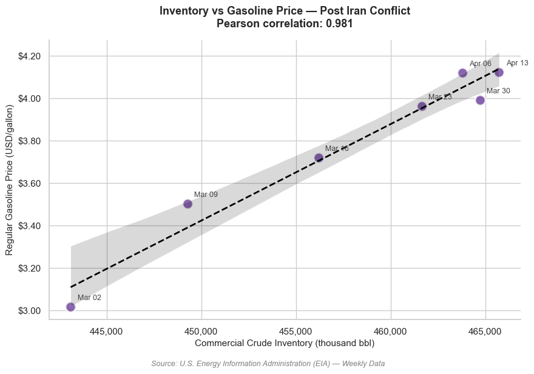
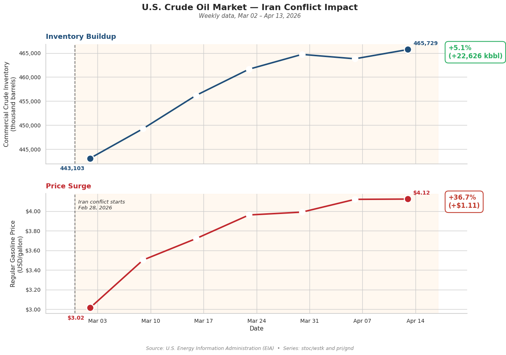

Project Overview — STAR Method
Why this analysis was done
This case study follows the STAR framework — Situation, Task, Action, Result — to explain not just what was found, but why the analysis was carried out in the first place.
The geopolitical context that triggered the question
On February 28, 2026, a major conflict began involving Iran — a key player in global crude supply. Energy markets reacted immediately. As an economist and business analyst, the natural question was: "How quickly do changes in crude oil inventories actually reach the pump price consumers pay?" In calm conditions the answer is textbook, but in a shock episode it is uncertain whether that logic still holds.
The analytical objective
Quantify the relationship between weekly U.S. commercial crude inventories and retail gasoline prices in the weeks right after the conflict began, using real public data rather than assumptions.
What the data showed
Between Feb 28 and Apr 13, 2026, inventories rose ~5% while pump prices jumped ~37%, with a Pearson correlation of 0.98 — the opposite of the textbook supply story.
The analysis pipeline
Wrote a Python script using requests to pull weekly EIA data from two endpoints, merged both series with pandas, computed the Pearson correlation with scipy/pandas, and rendered the time series and scatter plots with matplotlib + seaborn.
The interpretation behind the numbers
The co-movement is a classic case of confounding: inventories and prices both react to the same driver — geopolitical risk — rather than one causing the other. Isolating the true inventory effect would require controlling for an index of geopolitical uncertainty (e.g., the Caldara & Iacoviello GPR index).
Visualizations
Time series & correlation
Weekly EIA series for national commercial crude inventories (thousand bbl) and regular gasoline pump prices (USD/gallon), with the post-conflict window shaded.


Key Findings
The numbers behind the story
Methodology
From API to insight
- Fetched weekly commercial crude oil stocks via the EIA endpoint
/v2/petroleum/stoc/wstk/data/(facetEPC0, U.S. nationalduoarea=NUS). - Fetched weekly retail gasoline prices via
/v2/petroleum/pri/gnd/data/(facetEPMR). - Built a paginated helper to handle multi-page responses from the EIA API.
- Merged both series on week using an inner join.
- Computed percentage changes and the Pearson correlation over the post-conflict window.
- Rendered a dual-panel time series and a correlation scatter, then exported the merged dataset to CSV.
Stack: Python 3.12 · requests · pandas · matplotlib · seaborn · python-dotenv (Jupyter notebook).
The Interpretation
A classic case of confounding
During a geopolitical shock, the simple supply-and-demand relationship between inventories and prices breaks down. Refineries stockpile crude as a precaution, while traders price in a risk premium that flows from futures to the pump. Both effects move in the same direction at the same time — a textbook case of confounding rather than causation.
To isolate the true effect of inventories on prices, the analysis would need to control for a measure of geopolitical uncertainty — for example, the Caldara & Iacoviello Geopolitical Risk Index.
Why It Matters
Don't confuse co-movement with cause
When analyzing business and economic data, a strong correlation is only a starting point. Identifying the common underlying driver — and separating signal from shared shocks — is what turns a number into a defensible decision.